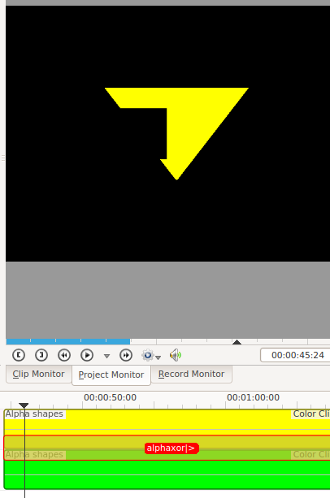
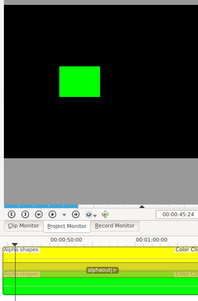
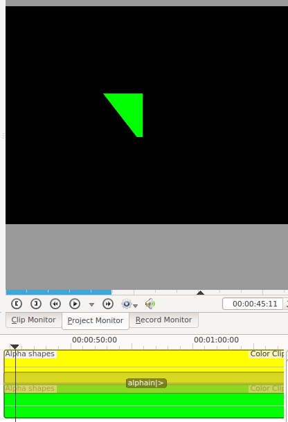
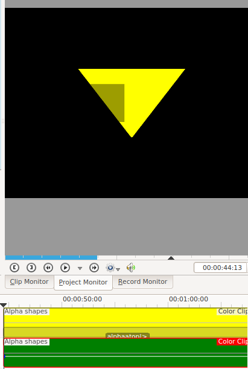
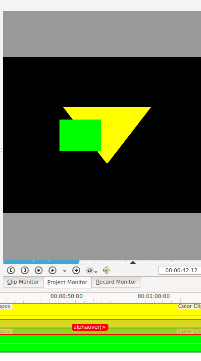

Alpha operation transitions¶
Contents
The addition, addition_alpha, alpha*atop*, alpha’’in*, alpha*out*, alpha over and alpha*xor’’ transitions all perform alpha operations between the two video tracks. These transitions only have an effect if the videos on the tracks have alpha channel information in them.
The Alpha Channel information is supplied by one of the Alpha manipulation. This Alpha Channel data describes which regions of the video track is transparent and how transparent it should be. Until you define some alpha channel data using an Alpha manipulation changes in the alpha operation transition settings will have no visible effect.
The alpha operation transitions define how the two different alpha channel information should be combined to produce the final image. These operations are implementing the operations described at Wikipedia page on Alpha Compositing.
In the examples below the yellow clip has a triangle alpha shape with min = 0 and max =618. This translates to 0% opacity outside the triangle and 61.8% opacity inside the triangle. Ie the alpha channel in the yellow track say show all the track underneath outside the triangle and show 38.2% of the underneath track inside the triangle
The Green clip has a rectangle alpha shape with min=0 and max =1000. This translates to make the clip 100% transparent outside the rectangle and 0% transparent inside the rectangle.
alpha*xor*
alpha*out*
alpha*in*
alpha*atop*
alpha over